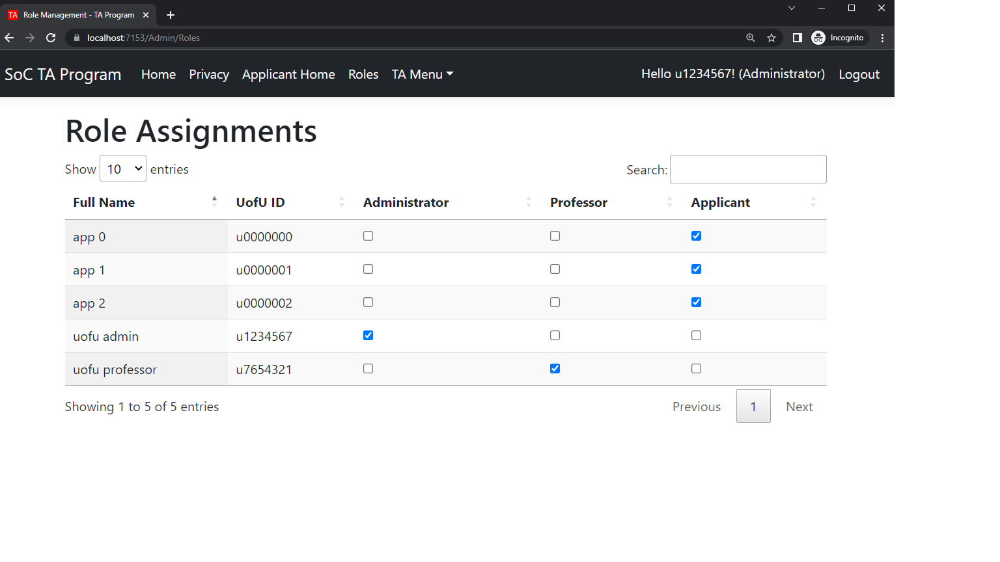

Home

This is the overall home page that the administrator sees, this is all realtime data that is pulled from the database using LINQ queries.
Application

Enrollments
We built an interactive chart using scraped data from a selenium webscraper. We used Highcharts javascript library to display and provide an interactive graph.
Roles
As you can see these are the avaliable roles that the administrator only has access to, the admin can assign various roles that have been created and the user will have those permissions.
Access Denied
The resulting page if the user is not authorized.
Student Avaliability

The user is able to interact with this pixi javascript graphic, When the user clicks on a timeslot it will turn green to indicate as avaliable. After the users saves the avaliability it is converted and sent to the database so the professors can see when the students are avaliable to work.